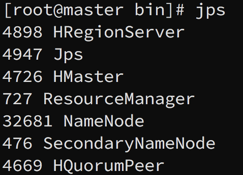

学习在阿里云上搭建 Hadoop + HBase + Hive + Spark 集群的笔记。学习在阿里云上搭建 Hadoop + HBase + Hive + Spark 集群的笔记。搭建过程中遇到了很多问题，在查阅资料的过程中也走了很多弯路。在这里将搭建步骤和问题一一记录，既方便日后复习，也为其它小伙伴提供一些帮助。
本篇是笔记的第二部分，介绍了 HBase 的安装和配置。
这篇笔记中还有未解决的问题，浏览时请注意甄别。
#TODO: HMaster 启动后很快消失
HBase
参考内容：铲子挖掘数据的博文、技术颜良的博文和HBase 官方文档
HBase 安装
和之前 Hadoop 一样，先在本地下载安装包，上传到 master 节点解压并重命名。我将它部署到了/usr/local/hbase目录下。接下来的所有内容中，请注意比较你的安装目录。
首先配置环境变量。打开/root/.bash_profile，在末尾添加：
1 | export HBASE_HOME=/usr/local/hbase |
执行source /root/.bash_profile令配置生效。接着使用 vi 打开/usr/local/hbase/conf/hbase-env.sh，在文件开始处添加环境变量：
1 | export JAVA_HOME=/usr/java/jdk1.8.0_231 |
输入以下命令检验安装：
1 | hbase version |
按照网上的很多教程这一步是不会有问题的。而事实上也有很多人（包括我）反映会有Error: Could not find or load main class org.apache.hadoop.hbase.util.GetJavaProperty的问题。有些教程给出的解决方案是配置环境变量HBASE_CLASSPATH。然而经过官方文档查询和亲身试验，这个环境变量的作用是同步 HBase 中的 Hadoop 集群配置和实际 Hadoop 集群中的配置（前者是依赖后者的，所以要保证配置一致），设置这个变量并不能解决问题。另一些资料显示这个问题存在于 HBase 某些版本的源码中，需要手动修改解决。解决方案我们在后文给出。
除了上面的问题，还会显示 SLF4J 开头的警告。这个警告可以忽视。
HBase 集群模式配置
修改/usr/local/hbase/conf下的hbase-site.xml文件，进行如下配置：
1 | <configuration> |
打开regionservers文件，删除默认的 localhost，添加如下内容：
1 | master |
将 Hadoop 集群配置同步至 HBase
HBase 的运行依赖于 Hadoop。在 HBase 中有一些关于 Hadoop 集群的默认配置。倘若我们实际使用的配置和默认配置不同，两者共同运行就会产生冲突。因此这里我们需要通过某种手段“告知” HBase 我们的配置。HBase 的官方文档给出了以下三种办法：
- 配置
base-env.sh文件，在其中添加HBASE_CLASSPATH参数，并将其设置为 Hadoop 配置文件的目录（即hadoop/etc/hadoop）； - 将
hdfs-site.xml复制到hbase/conf下（最好是建立一个软链接）； - 如果仅有少量的配置，也可以将它们写到
hbase-site.xml中
这里我采用了第二种方法，原因是铲子挖掘数据的博文中提到第一种方法也有可能会带来问题。他的博文中还复制了core-site.xml。我想复制了也没有坏处，所以也照做了。
将 Hadoop jar 包同步至 HBase
根据HBase 官方文档，HBase 中原有的 jar 包只在非分布式应用情景下使用。要在分布式情景下使用，官方建议将已经部署好的 Hadoop 集群中对应的 jar 包复制到 HBase 中（但没有详细指出是哪些包）。参考铲子挖掘数据的博文中的做法，进行以下步骤：
1 | cd /usr/local/hbase/lib/client-facing-thirdparty |
他并没有选择复制 Hadoop 中的 jar 包，但这步操作的确解决了我启动 HBase 后，HMaster 和 HRegionServer 未能正常启动的问题。至于官方的建议究竟什么情况下是有必要的，只能等到未来使用过程中再进一步了解了。
将配置好的 HBase 文件传送到各个 slave 节点
将配置好的 hbase 文件夹传送到其它各个节点，最好完成后面的解决方案后再传送：
1 | scp -r /usr/local/hbase root@slave01:/usr/local/ |
这时还剩下重要的一步：仿照 master 节点修改各个 slave 节点的.bash_profile环境变量。趁热打铁将它完成吧！
找不到 GetJavaProperty 的解决方案
解决这个问题需要修改hbase/bin目录下的 hbase 文件。在修改之前不要忘记先备份：
1 | cp hbase hbase_copy |
首先定位到 182 行，在add_to_cp_if_exists “${HBASE_HOME}/hbase-server/target”下面加入：
1 | Needed for GetJavaProperty check below |
对于不熟悉 vim 的小伙伴，这里有几个技巧。第一，在命令模式下输入
:set number可以显示行号；第二，在命令模式下输入:行号可以移动到对应行；第三，在命令模式下按o（小写）可以在当前行下方插入一行，O（大写）可以在当前行上方插入一行
插入完成后，在当前约 190 行往下，删除（或者注释掉）以下内容：
1 | add the hbase jars for each module |
vim 快速批量注释的方法，不熟悉的小伙伴不妨自行搜索一下
接下来在大约 310 到 320 行的地方，找到if [ -n "${HADOOP_IN_PATH}" ] && [ -f "${HADOOP_IN_PATH}" ]; then。在其下方插入：
1 | If built hbase, temporarily add hbase-server*.jar to classpath for GetJavaProperty |
然后将
1 | HADOOP_JAVA_LIBRARY_PATH=$(HADOOP_CLASSPATH="$CLASSPATH" "${HADOOP_IN_PATH}" \ |
改成（还是可以注释掉后再添加）
1 | HADOOP_JAVA_LIBRARY_PATH=$(HADOOP_CLASSPATH="$CLASSPATH${temporary_cp}" "${HADOOP_IN_PATH}" \ |
最后保存退出就可以了。
测试
切换到 HBase 安装目录/usr/local/hbase/bin，执行以下命令：
1 | start-hbase.sh |
如果在此之前，你的 Hadoop 集群还未正常运作，那么还需要先启动 Hadoop 集群才行。进行了上面的操作后，如果能够正常进入 hbase shell，那么安装便成功了。当然了，所谓安装成功，不过是通往使用过程中更多问题的门票罢了。使用jps命令应当能够看到下面的进程：

另外，你也可以通过 10610 端口进入 Web 界面对集群进行监控。
我在测试的过程中遭遇过 master 节点所有服务启动正常，但是 slave 节点 HRegionServer 无法正常启动的问题。后来发现可能是因为前一次重启 HBase 之前忘记清空 logs
结语
到这里，HBase 的安装配置就告一段落了。没有什么是永恒的，除了 bug 和死亡。